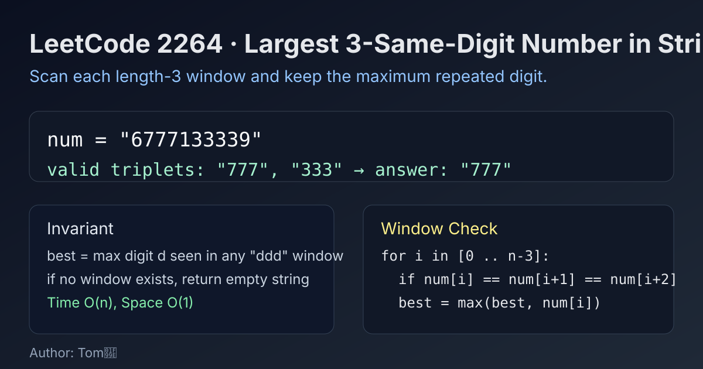

LeetCode 2264: Largest 3-Same-Digit Number in String (Sliding Window Triplet Check)
LeetCode 2264StringEnumerationToday we solve LeetCode 2264 - Largest 3-Same-Digit Number in String.
Source: https://leetcode.com/problems/largest-3-same-digit-number-in-string/

English
Problem Summary
Given a numeric string num, a good integer is a substring of length 3 where all digits are equal (like "777" or "000"). Return the largest good integer as a string, or "" if none exists.
Key Insight
Every valid answer must be one of "000" to "999". We only need to scan each length-3 window once, check whether all three chars are the same, and keep the maximum digit seen.
Brute Force and Why We Improve
One brute idea is to test all patterns from "999" down to "000" and search each in the string. It works, but repeatedly searching is unnecessary. A single left-to-right pass already gives the answer directly.
Optimal Algorithm (Step-by-Step)
1) Initialize best digit as -1.
2) For each index i from 0 to n-3, check num[i] == num[i+1] == num[i+2].
3) If valid, update best = max(best, num[i]-'0').
4) After scanning, if best == -1 return ""; else return string(3, char('0'+best)).
Complexity Analysis
Time: O(n).
Space: O(1).
Common Pitfalls
- Returning a single char instead of length-3 string.
- Forgetting the "000" case (should return exactly "000", not empty).
- Off-by-one in loop boundary; last starting index is n-3.
Reference Implementations (Java / Go / C++ / Python / JavaScript)
class Solution {
public String largestGoodInteger(String num) {
int best = -1;
for (int i = 0; i + 2 < num.length(); i++) {
char a = num.charAt(i);
if (a == num.charAt(i + 1) && a == num.charAt(i + 2)) {
best = Math.max(best, a - '0');
}
}
if (best == -1) return "";
char c = (char) ('0' + best);
return "" + c + c + c;
}
}func largestGoodInteger(num string) string {
best := -1
for i := 0; i+2 < len(num); i++ {
if num[i] == num[i+1] && num[i] == num[i+2] {
d := int(num[i] - '0')
if d > best {
best = d
}
}
}
if best == -1 {
return ""
}
c := byte('0' + best)
return string([]byte{c, c, c})
}class Solution {
public:
string largestGoodInteger(string num) {
int best = -1;
for (int i = 0; i + 2 < (int)num.size(); ++i) {
if (num[i] == num[i + 1] && num[i] == num[i + 2]) {
best = max(best, num[i] - '0');
}
}
if (best == -1) return "";
return string(3, char('0' + best));
}
};class Solution:
def largestGoodInteger(self, num: str) -> str:
best = -1
for i in range(len(num) - 2):
if num[i] == num[i + 1] == num[i + 2]:
best = max(best, ord(num[i]) - ord('0'))
return "" if best == -1 else str(best) * 3var largestGoodInteger = function(num) {
let best = -1;
for (let i = 0; i + 2 < num.length; i++) {
if (num[i] === num[i + 1] && num[i] === num[i + 2]) {
best = Math.max(best, num.charCodeAt(i) - 48);
}
}
if (best === -1) return "";
return String(best).repeat(3);
};中文
题目概述
给定一个仅包含数字字符的字符串 num。如果某个长度为 3 的子串三个字符都相同（例如 "777"、"000"），就称为 good integer。返回其中最大的 good integer（字符串形式）；若不存在则返回空串 ""。
核心思路
答案只能是 "000" 到 "999" 中的一个。我们扫描所有长度为 3 的窗口，只要三个字符相等就记录对应数字，并维护最大值即可。
朴素解法与优化
朴素做法可以从 "999" 往下到 "000" 逐个在原串里查找。虽然可行，但会有重复搜索。更直接的方法是一次线性扫描，边扫边更新最优解。
最优算法（步骤）
1）设 best = -1。
2）遍历起点 i = 0..n-3，检查 num[i] == num[i+1] == num[i+2]。
3）若成立，用该数字更新 best。
4）遍历结束后，若 best == -1 返回空串；否则返回 3 个相同数字组成的字符串。
复杂度分析
时间复杂度：O(n)。
空间复杂度：O(1)。
常见陷阱
- 结果必须是长度 3 的字符串，不是单个字符。
- 漏掉 "000" 这个合法答案。
- 循环边界写错，导致最后一个窗口没检查到。
多语言参考实现（Java / Go / C++ / Python / JavaScript）
class Solution {
public String largestGoodInteger(String num) {
int best = -1;
for (int i = 0; i + 2 < num.length(); i++) {
char a = num.charAt(i);
if (a == num.charAt(i + 1) && a == num.charAt(i + 2)) {
best = Math.max(best, a - '0');
}
}
if (best == -1) return "";
char c = (char) ('0' + best);
return "" + c + c + c;
}
}func largestGoodInteger(num string) string {
best := -1
for i := 0; i+2 < len(num); i++ {
if num[i] == num[i+1] && num[i] == num[i+2] {
d := int(num[i] - '0')
if d > best {
best = d
}
}
}
if best == -1 {
return ""
}
c := byte('0' + best)
return string([]byte{c, c, c})
}class Solution {
public:
string largestGoodInteger(string num) {
int best = -1;
for (int i = 0; i + 2 < (int)num.size(); ++i) {
if (num[i] == num[i + 1] && num[i] == num[i + 2]) {
best = max(best, num[i] - '0');
}
}
if (best == -1) return "";
return string(3, char('0' + best));
}
};class Solution:
def largestGoodInteger(self, num: str) -> str:
best = -1
for i in range(len(num) - 2):
if num[i] == num[i + 1] == num[i + 2]:
best = max(best, ord(num[i]) - ord('0'))
return "" if best == -1 else str(best) * 3var largestGoodInteger = function(num) {
let best = -1;
for (let i = 0; i + 2 < num.length; i++) {
if (num[i] === num[i + 1] && num[i] === num[i + 2]) {
best = Math.max(best, num.charCodeAt(i) - 48);
}
}
if (best === -1) return "";
return String(best).repeat(3);
};
Comments